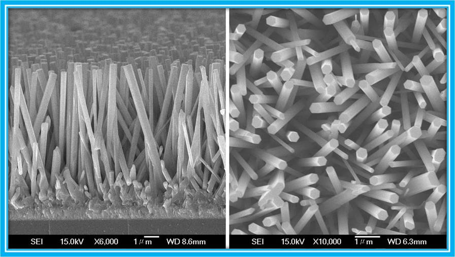
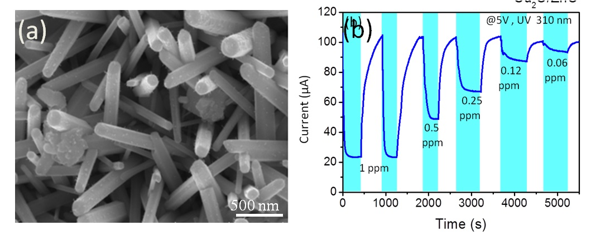

研究方向
| 奈米材料 |
氧化鋅奈米線 |
一維奈米材料的金屬氧化物奈米線，其物理及化學性質迥不同於巨觀尺度下特性，而極高的表面積對體積比，非常適合應用於氣體感測、光感測、生醫感測、光觸媒、染料敏化太陽能電池等等。圖為成長大面積的氧化鋅奈米線於透明導電玻璃基板的SEM側視影像（左圖）與上視影像（右圖）。 |
| 氣體感測 |
氧化鋅奈米線氣體感測器 |
當待測物吸附於金屬氧化物奈米線表面時，會改變奈米線載子濃度，若加上電極，測量奈米線電流變化，便可得知待測物濃度，具有靈敏度高反應快等優點，並且只需少量奈米材料，非常適合作為微型電阻式感測器。圖為批覆氧化亞銅粒子的氧化鋅奈米線(左圖)應於大氣環境下低濃度NO氣體感測(右圖)。 |
| 有機染料光觸媒 |
氧化鋅奈米線 |
將氧化鋅奈米線試片置入燒杯中，並以RhB溶液當作汙染物，放入一個馬達適度攪拌溶液，並使用100瓦的鹵素燈當作光觸媒反應系統的光源，透過量測系統量測光譜，進而知道其分解效率。 |
| 抗菌效應 |
氧化鋅奈米線抗菌試驗 |
抗菌實驗中，將100μl的大腸桿菌菌液做為測試標的物，滴附在銅氧化物與氧化鋅奈米複合材料試片上，使用光強度約為1 mW/cm2的藍光LED燈管，做為光觸媒反應系統的光源，透過序列稀釋法，計數存活的大腸桿菌菌落數，進而得知大腸桿菌存活率。 |